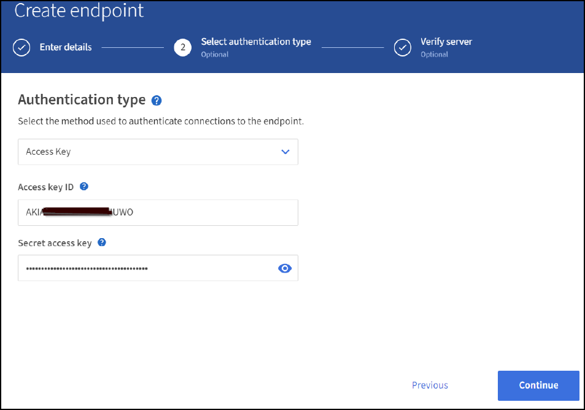

经验证的第三方解决方案
经验证的第三方解决方案
配置StorageGRID 搜索集成服务
 建议更改
建议更改
本指南详细说明了如何使用Amazon OpenSearch服务或内部Elasticsearch配置NetApp StorageGRID 11.6搜索集成服务。
简介
StorageGRID 支持三种类型的平台服务。
-
* StorageGRID CloudMirror复制*。将特定对象从StorageGRID 存储分段镜像到指定的外部目标。
-
通知。按存储分段发送事件通知、以便向指定的外部Amazon Simple Notification Service (Amazon SNS)发送有关对对象执行的特定操作的通知。
-
搜索集成服务。将简单存储服务(S3)对象元数据发送到指定的Elasticsearch索引、您可以在该索引中使用外部服务搜索或分析元数据。
S3租户可通过租户管理器UI配置平台服务。有关详细信息，请参见 "使用平台服务的注意事项"。
本文档是对的补充 "《StorageGRID 11.6租户指南》" 和为搜索集成服务的端点和存储分段配置提供了分步说明和示例。此处提供的Amazon Web Services (AWS)或内部Elasticsearch设置说明仅用于基本测试或演示。
受众应熟悉网格管理器和租户管理器、并可访问S3浏览器、以便为StorageGRID 搜索集成测试执行基本的上传(PUT)和下载(GET)操作。
创建租户并启用平台服务
-
使用Grid Manager创建S3租户、输入显示名称并选择S3协议。
-
在权限页面上、选择允许平台服务选项。如果需要、也可以选择其他权限。

-
设置租户root用户初始密码、或者如果在网格上启用了标识联合、则选择具有root访问权限的联合组来配置租户帐户。
-
单击以root用户身份登录、然后选择分段：创建和管理分段。
此时将转到租户管理器页面。
-
在租户管理器中、选择我的访问密钥以创建并下载S3访问密钥、以供日后测试。
使用Amazon OpenSearch搜索集成服务
Amazon OpenSearch (以前称为Elasticsearch)服务设置
使用此操作步骤 可以快速简单地设置OpenSearch服务、但仅用于测试/演示。如果您使用内部Elasticsearch搜索集成服务、请参见一节 使用内部Elasticsearch搜索集成服务。

|
要订阅OpenSearch服务、您必须拥有有效的AWS控制台登录名、访问密钥、机密访问密钥和权限。 |
-
按照中的说明创建新域 "AWS OpenSearch服务入门"、但以下情况除外：
-
第 4 步域名：sgdemo
-
第10步：细化访问控制：取消选择启用细化访问控制选项。
-
第12步：访问策略：选择配置级别访问策略、然后选择JSON选项卡以使用以下示例修改访问策略：
-
将突出显示的文本替换为您自己的AWS身份和访问管理(IAM) ID和用户名。
-
将突出显示的文本(IP地址)替换为用于访问AWS控制台的本地计算机的公有 IP地址。
-
打开浏览器选项卡以 "https://checkip.amazonaws.com" 以查找公有 IP。
{ "Version": "2012-10-17", "Statement": [ { "Effect": "Allow", "Principal": {"AWS": "arn:aws:iam:: nnnnnn:user/xyzabc"}, "Action": "es:*", "Resource": "arn:aws:es:us-east-1:nnnnnn:domain/sgdemo/*" }, { "Effect": "Allow", "Principal": {"AWS": "*"}, "Action": [ "es:ESHttp*" ], "Condition": { "IpAddress": { "aws:SourceIp": [ "nnn.nnn.nn.n/nn" ] } }, "Resource": "arn:aws:es:us-east-1:nnnnnn:domain/sgdemo/*" } ] }
-
-
-
等待15到20分钟、使此域变为活动状态。

-
单击OpenSearch Dashboards URL以在新选项卡中打开域以访问此信息板。如果出现访问被拒绝错误、请验证访问策略源IP地址是否已正确设置为您的计算机公有 IP、以允许访问域信息板。
-
在信息板欢迎页面上、选择"Explore on your own"。从菜单中、转到"Management"→"Dev Tools"
-
在Dev Tools → Console下、输入`PUT <index>`、在此可以使用索引存储StorageGRID 对象元数据。我们在以下示例中使用索引名称"gmetadata"。单击小三角形符号以执行PUT命令。预期结果显示在右侧面板上、如以下示例屏幕截图所示。

-
验证索引是否可从Amazon OpenSearch UI的sgdomain >索引下查看。

平台服务端点配置
要配置平台服务端点、请执行以下步骤：
-
在租户管理器中、转至存储(S3)>平台服务端点。
-
单击创建端点、输入以下内容、然后单击继续：
-
显示名称示例`AWS-OpenSearch`
-
示例中的域端点会在URI字段中的上述操作步骤 的步骤2下显示屏幕截图。
-
在URN字段中、上述操作步骤 的步骤2中使用的域ARN、并将`/<index>/_doc`添加到ARN末尾。
在此示例中、URN变为`arn：AWS：es：us-east-1：211234567890：domain/sgdemo /sgmedata/_doc`。

-
-
要访问Amazon OpenSearch sgdomain、请选择访问密钥作为身份验证类型、然后输入Amazon S3访问密钥和机密密钥。要转到下一页、请单击继续。

-
要验证端点、请选择使用操作系统CA证书和测试并创建端点。如果验证成功、则会显示一个类似于下图的端点屏幕。如果验证失败、请确认URN在路径末尾包含`/<index>/_doc`、并且AWS访问密钥和机密密钥正确无误。

使用内部Elasticsearch搜索集成服务
内部Elasticsearch设置
此操作步骤 仅用于使用Docker快速设置内部Elasticsearch和Kibana、以便用于测试目的。如果Elasticsearch和Kibana服务器已存在、请转至步骤5。
-
请遵循此操作 "Docker安装操作步骤" 安装Docker。我们使用 "CentOS Docker安装操作步骤" 在此设置中。
sudo yum install -y yum-utils sudo yum-config-manager --add-repo https://download.docker.com/linux/centos/docker-ce.repo sudo yum install docker-ce docker-ce-cli containerd.io sudo systemctl start docker
-
要在重新启动后启动Docker、请输入以下内容：
sudo systemctl enable docker
-
将`vm.max_map_count`值设置为262144：
sysctl -w vm.max_map_count=262144
-
要在重新启动后保留此设置、请输入以下内容：
echo 'vm.max_map_count=262144' >> /etc/sysctl.conf
-
-
按照 "Elasticsearch快速入门指南" 自管理部分、用于安装和运行Elasticsearch和Kibana Docker。在此示例中、我们安装了8.1版。

记下由Elasticsearch创建的用户名/密码和令牌、您需要使用它们来启动Kibana UI和StorageGRID 平台端点身份验证。 
-
启动Kibana Docker容器后、控制台中将显示URL链接`\https://0.0.0.0:5601`。将0.0.0.0替换为URL中的服务器IP地址。
-
使用用户名`弹性`和Elastic在上一步中生成的密码登录到Kibana UI。
-
首次登录时、请在信息板欢迎页面上选择"Explore on your own"。从菜单中、选择"Management">"Dev Tools"。
-
在开发工具控制台屏幕上、输入`PUT <index>`、在此可以使用此索引存储StorageGRID 对象元数据。我们在此示例中使用索引名称`sgmetadata`。单击小三角形符号以执行PUT命令。预期结果显示在右侧面板上、如以下示例屏幕截图所示。

平台服务端点配置
要为平台服务配置端点、请执行以下步骤：
-
在租户管理器上、转至存储(S3)>平台服务端点
-
单击创建端点、输入以下内容、然后单击继续：
-
显示名称示例：
弹性搜索 -
URI：
https://<elasticsearch-server-ip或hostname>：9200 -
urn：
urn：<something>：es：：：<部分唯一文本>/<索引名称>/_doc、其中索引名称是您在Kibana控制台上使用的名称。示例：urn：local：es：：：sgmd/sgmetadata/_doc
-
-
选择基本HTTP作为身份验证类型、输入用户名`弹性`以及Elasticsearch安装过程生成的密码。要转到下一页、请单击继续。

-
选择不验证证书和测试并创建端点以验证端点。如果验证成功、则会显示类似于以下屏幕截图的端点屏幕。如果验证失败、请验证URN、URI和用户名/密码条目是否正确。

存储分段搜索集成服务配置
创建平台服务端点后、下一步是在存储分段级别配置此服务、以便在创建、删除对象或更新其元数据或标记时将对象元数据发送到定义的端点。
您可以使用租户管理器配置搜索集成、以便将自定义StorageGRID 配置XML应用于存储分段、如下所示：
-
在租户管理器中、转至存储(S3)>分段
-
单击Create Bucket、输入存储分段名称(例如、
sgmetada-test)并接受默认值`us-east-1` Region。 -
单击"继续">"创建存储分段"。
-
要打开存储分段概述页面、请单击存储分段名称、然后选择平台服务。
-
选择启用搜索集成对话框。在提供的XML框中、使用以下语法输入配置XML。
突出显示的URN必须与您定义的平台服务端点匹配。您可以打开另一个浏览器选项卡以访问租户管理器、并从定义的平台服务端点复制URN。
在此示例中、我们不使用前缀、这意味着此分段中每个对象的元数据将发送到先前定义的Elasticsearch端点。
<MetadataNotificationConfiguration> <Rule> <ID>Rule-1</ID> <Status>Enabled</Status> <Prefix></Prefix> <Destination> <Urn> urn:local:es:::sgmd/sgmetadata/_doc</Urn> </Destination> </Rule> </MetadataNotificationConfiguration> -
使用S3浏览器使用租户访问/密钥连接到StorageGRID 、将测试对象上传到`sgmetada-test`存储分段、并向对象添加标记或自定义元数据。

-
使用Kibana UI验证对象元数据是否已加载到sgmetadata的索引中。
-
从菜单中、选择"Management">"Dev Tools"。
-
将示例查询粘贴到左侧的控制台面板中、然后单击三角形符号以执行该查询。
以下示例屏幕截图中的查询1示例结果显示了四条记录。这与存储分段中的对象数匹配。
GET sgmetadata/_search { "query": { "match_all": { } } }
以下屏幕截图中的查询2示例结果显示了标记类型为jpg的两条记录。
GET sgmetadata/_search { "query": { "match": { "tags.type": { "query" : "jpg" } } } }+

-